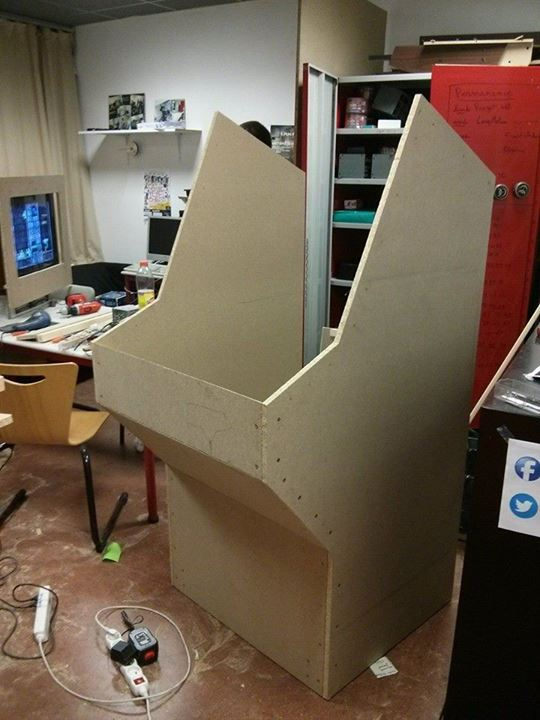
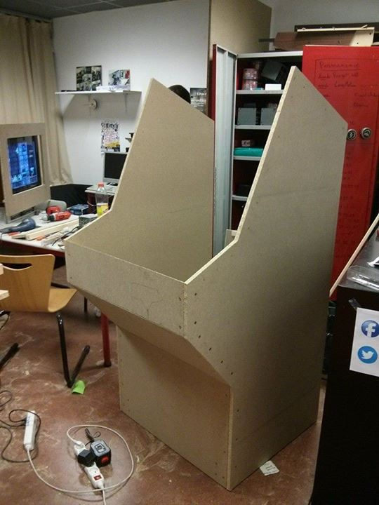

Projet réalisé dans le cadre du club élec (Thomas Abot, Thibault Charles, Victor Dorez et moi-même) pour le foyer de l'ISEN.
Partie électronique
La borne se compose d'un PC, d'une TV cathodique, et d'un vieux clavier PS/2 sur lequel ont été soudés les boutons et les joysticks.Le Pc communique avec la TV grâce à l'ajout d'une arte graphique comportant une sortie S-vidéo. En interrupteur à été rajouté sur le côté pour rendre son allumage et son extinction plus aisée.
Le meuble
Le meuble en lui-même a été fabriqué à partir de planches d'aggloméré de 19 mm assemblés avec des tasseaux de 45mm et des vis. Les coins sont protégés par des cornières cloutées et collés car l'aggloméré a tendance à s'effritter sur les bord avec le temps. La TV pesant 40 kg, elle repose sur une poutre de 50*50 mm et des tasseaux. Le fond a été surrelevé pour pouvoir installer des roulettes en dessous afin de rendre son transport plus facile.Partie informatique
Le PC tourne sous Arch Linux car il est relativement vieux et cette distribution est suffisament légère et modulable. Comme aucun sélecteur de jeux ne parraissait satisfaisant, un programme à été spécialemet créer pour la borne, il s'agit d'OpenAGS (Open Arcade Game Selector), Ce dernier à été développé par Thibaut et Thomas en langage D, pour plus d'information vous pouvez consulter les source sur github ici. Le mapping des touches a été effectué grâce à la commande xmodmap et la configuration de l'écran avec xrandr. Les jeux proposés sont tous en open-source.quelques images pendant la fabrication:

 
